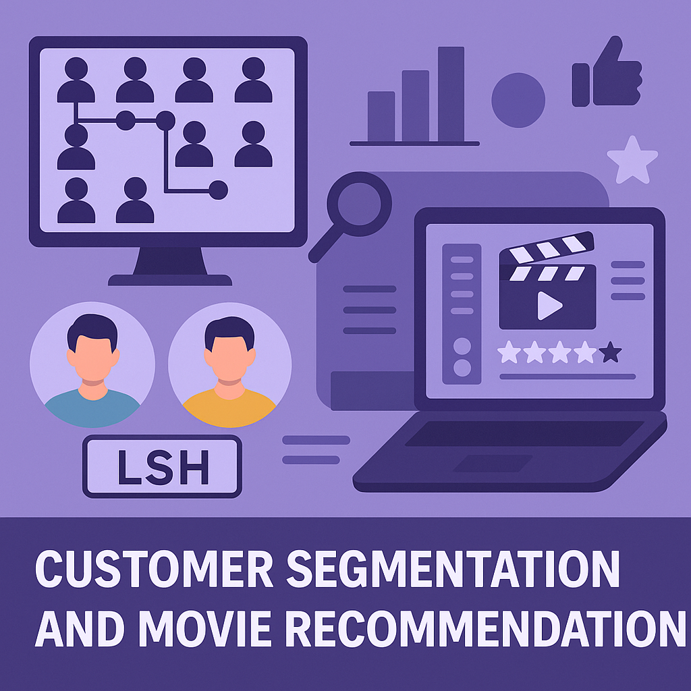
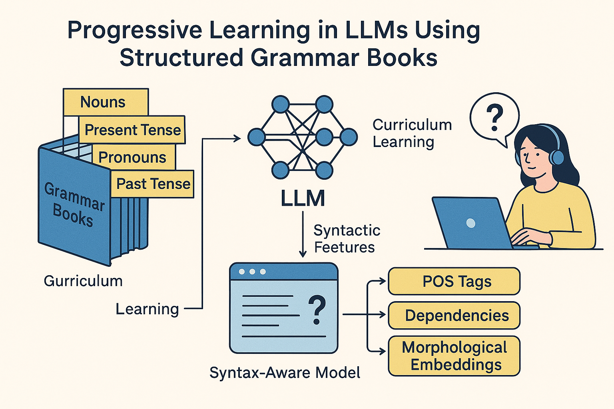
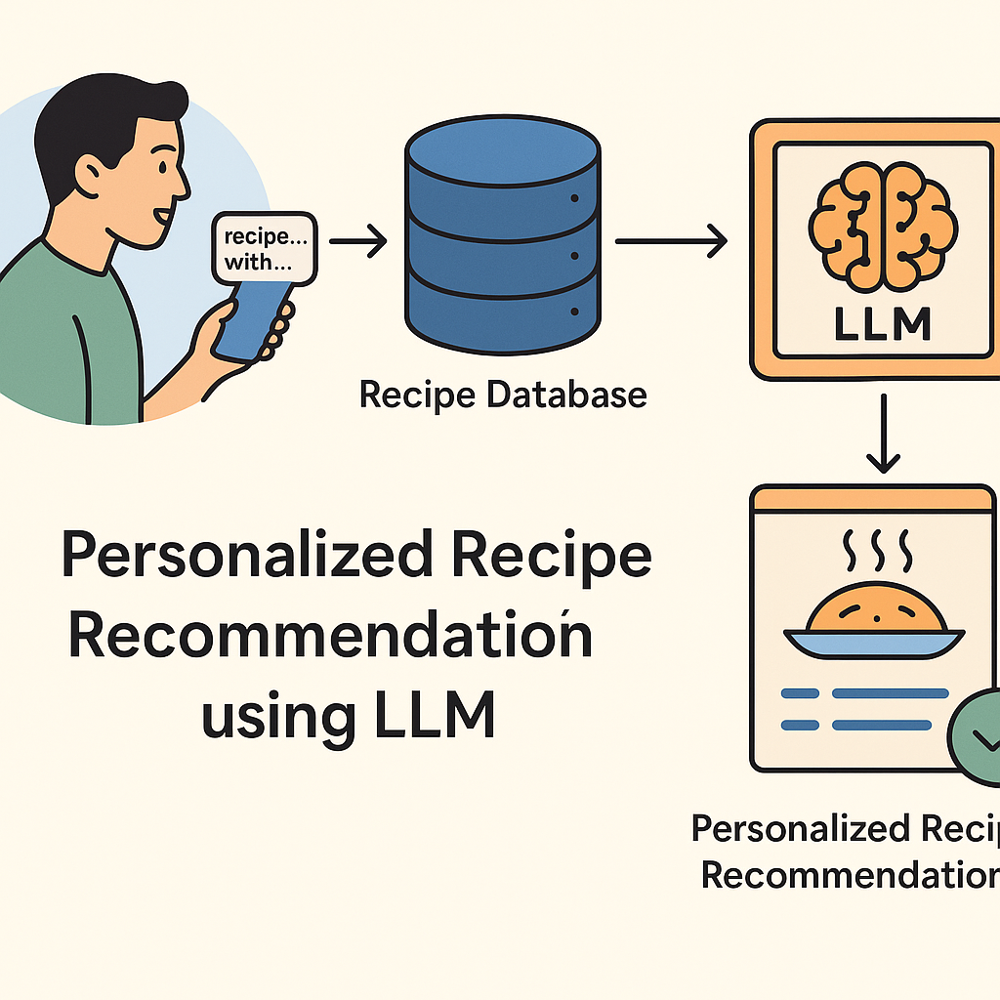
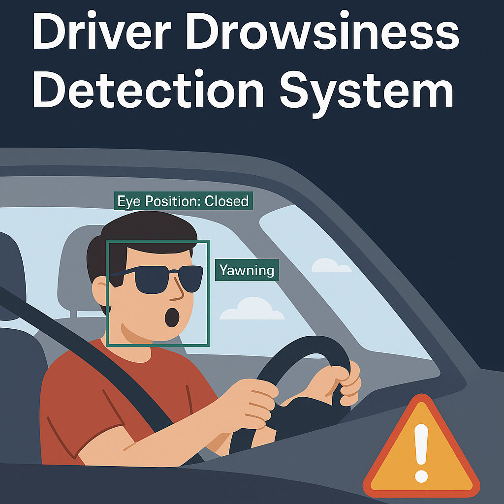

January 14, 2025-May 5, 2025

This capstone project for DSGA1004 – Big Data focuses on building a scalable pipeline for personalized movie recommendation and customer segmentation using the MovieLens dataset (330,000 users, 86,000 movies). The system is designed to handle large-scale data using distributed processing and applies both collaborative filtering and set-based similarity methods to produce actionable user insights.
For the customer segmentation task, we implemented a MinHash-based approximation of Jaccard similarity to identify the top 100 pairs of users—termed movie twins—who exhibited the most overlap in movie-watching behavior. These similarities were efficiently computed using Locality Sensitive Hashing (LSH), and were validated using rating correlations, revealing that our approach yielded over 2× stronger alignment in preferences compared to random user pairs.
In the recommendation module, we established a popularity-based baseline and a collaborative filtering model using Spark's Alternating Least Squares (ALS). While ALS provided more personalized recommendations, the popularity model outperformed it under sparse data conditions. We rigorously evaluated both models using MAP, Precision@100, and NDCG@100 on temporally split datasets to simulate real-world deployment scenarios.
Tools & Technologies: PySpark, Hadoop HDFS, Spark MLlib (ALS), MinHash, Locality Sensitive Hashing (LSH), Pandas, NumPy, Jupyter, Matplotlib, Python

This project explores a novel progressive training framework for Large Language Models (LLMs), inspired by human language acquisition. Using the New Concept English grammar book series (Volumes 1–4), we designed a structured curriculum to train models from basic to advanced language constructs, enriched with explicit syntactic features such as POS tags, dependencies, and morphological embeddings.
We developed syntax-augmented models—SyntaxGPT and SyntaxT5—and compared them against pretrained baselines like GPT-2 and T5-base on the TREC question classification task. Our experiments showed that curriculum pretraining and syntax embeddings enhanced F1 scores and training stability, particularly in the encoder-decoder (T5) architecture. Syntax-aware models achieved smoother convergence, better generalization, and demonstrated the promise of structured learning in low-resource settings.
Tools & Technologies: Hugging Face Transformers, Tesseract OCR, Stanza (for POS/DEP/NER tagging), PyTorch, Scikit-learn, Pandas, NumPy, Matplotlib, Python

This project presents a Personalized Recipe Recommendation System powered by OpenAI GPT-4, semantic vector embeddings, and a dynamic user feedback loop. It effectively addresses major challenges in the domain, including the cold start problem, LLM hallucinations, and allergen safety, ensuring that recipe suggestions are both relevant and reliable.
By leveraging the RecipeNLG dataset and generating vector representations via text-embedding-ada-002, the system stores and retrieves recipes using LanceDB for fast, accurate semantic search. It personalizes results using a combination of cosine similarity, user rating history, and allergy-aware filtering. A continual feedback mechanism refines recommendations over time, delivering an adaptive and engaging culinary experience.
Tools & Technologies: OpenAI GPT-4, LangChain, LanceDB, text-embedding-ada-002, Flask, Streamlit, Pandas, NumPy, Python
January 2022 - January 2024

The Driver Drowsiness Detection System leverages deep learning and computer vision to identify signs of fatigue in real time, helping prevent accidents caused by drowsy driving. Using dual custom-trained YOLOv5 models, the system monitors eye closure and yawning frequency through live video feeds to assess driver alertness.
The project utilizes a custom dataset of 1200+ annotated images and employs preprocessing techniques like face alignment and Gaussian blur to improve prediction accuracy. When drowsiness indicators such as prolonged eye closure or frequent yawns are detected, a voice alert is triggered using the eSpeak module. The model achieves over 85% accuracy and performs reliably even under challenging conditions such as low lighting or drivers wearing glasses. This system was awarded third prize at ICDMAI 2024 for its real-world impact.
Tools & Technologies: YOLOv5, OpenCV, Dlib, imutils, eSpeak, Python
📄 Publication: Patil, R., Jha, S., Vartak, P. (2024). Driver Drowsiness Detection System Using YOLOv5. In: Sharma, N., Goje, A.C., Chakrabarti, A., Bruckstein, A.M. (eds) Data Management, Analytics and Innovation. Springer, Singapore.
🔗 View Publication